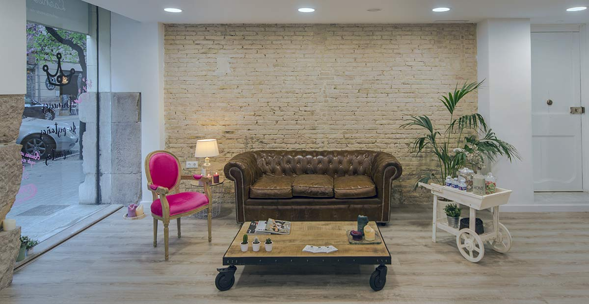
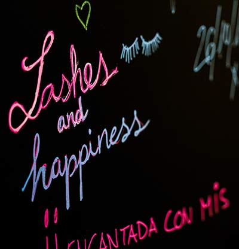

Franquicias LashesVenecia
Historia
LashesVenecia es una empresa que nace a principios de 2014 para descubrir en España el servicio de extensiones de pestañas. Desde sus comienzos, sus fundadoras han apostado por una estrategia dinámica y diferente que ha hecho crecer el proyecto de forma increíble dentro y fuera de España.
DESCUBRE EL PROGRAMA DE INCENTIVOS PARA NUEVOS FRANQUICIADOS DE LashesVenecia
Rellena el siguiente cuestionario y te explicamos cómo.
Concepto
¿No te has preguntado alguna vez por qué todos los salones de belleza se parecen tanto? ¿No te gustaría formar parte de algo que te diferencie de los demás? En LashesVenecia somos diferentes y únicos.
Inspirados en un concepto de belleza diferente, donde el ambiente cuidadosamente seleccionado, el diseño único y diferente y el servicio de calidad, se unen a la idea que está revolucionando el mundo de la belleza: las extensiones de pestañas.
Filosofía
Lashes & Go es un concepto que se adapta a la demanda de hoy y se anticipa a las necesidades del mañana. Fundada en la idea de ofrecer siempre un servicio Premium, nuestra máxima siempre ha sido popularizar servicios de alta calidad.
Desde el diseño de nuestros salones a la puesta en escena. Todo forma parte de la experiencia Lashes & Go. Visita uno de nuestros centros para entender la diferencia.

Cuidamos de tu inversión
Nuestro proyecto de franquicia se sustenta sobre cinco pilares: Búsqueda del local idóneo, formación, control de calidad, tecnología y marketing.
Búsqueda del local idóneo
Imagina contar con una herramienta que geolocalice a tu competencia, que te diga cuál es el volumen de tráfico peatonal y rodado, que te muestre cuál es la renta per cápita media de una zona o que te ayude a entender en qué se gastan el dinero tus clientes potenciales. Imagina poder replicar zonas de éxito comparándolas con otros centros, no tener que preocuparte de acertar con la zona. Ahora deja de imaginar.
Lashes & Go cuenta con la herramienta más potente del mercado para ayudarte a buscar el local ideal. No dejes una de las elecciones más importantes en manos del azar. Elige la localización de tu negocio con criterios objetivos.
Formación
Títulos internacionales avalan a nuestras formadoras como las mejores en sus competencias y gracias a ello, en 2017 recibimos la medalla de oro de la asociación española de profesionales de la imagen.
Si quieres resultados excelentes tu formación ha de ser excelente. Contamos con oficina, sala de reuniones y una academia equipada para nuestros franquiciados. Cuenta siempre con el respaldo de un formador dedicado en nuestra academia. Nuestras Royal Máster velan porque ningún detalle baje la calidad de nuestros centros.
Control de Calidad
Sabemos que no sois expertos en los servicios que ofrecemos. Por ello, la misión de nuestra organización es asegurarnos de que todos los trabajos que se realizan en vuestros negocios sean revisados. Nuestra misión es simplificar la gestión de nuestros franquiciados. Dedícate a lo importante y déjanos a nosotros el resto.
Tecnología
Nuestro compromiso es estar a la vanguardia con herramientas que nos ayuden a ofrecer una mejor experiencia a nuestros franquiciados y clientes. Además de los servicios de búsqueda de local idóneo, contamos con un software de gestión que nos ayuda a entender qué está pasando en tu negocio en tiempo real para detectar cualquier tipo de problema.
Automatizar muchas de las acciones que se realizan con los clientes ahora es una realidad con la potencia de los workflow. Ten en la palma de la mano toda la operativa de tu negocio gracias a Google Suite o aprovecha la app personalizada para que tus clientes interactúen con vosotros. Bienvenid@ al salón de belleza del siglo XXI.
Marketing
SEO, SEM, Adwords, palabras clave, programas de fidelización, notas de prensa. ¿Alguna vez has oído hablar de ellos pero no sabes por dónde empezar? No te preocupes. Dominamos los medios. Focalizamos nuestros recursos en hacer que tu negocio sea visible y reconocible. Gracias al respaldo de nuestra agencia de comunicación o nuestros consultores de marketing podrás disfrutar desde el primer día de una posición de privilegio en Internet y redes sociales. Participa con nosotros en hacer tu marca aún más grande.
Mucho más que Pestañas
En los centros Lashes & Go tendrás la posibilidad de ofrecer a tus clientes servicios de microblading, manicura, pedicura, depilación facial.
Desde nuestros comienzos, han sido muchos los servicios que hemos incorporado a nuestro menú. Escuchar a nuestros clientes y ofrecerles lo último del mercado nos hace llegar cada día a más personas.
¿Por qué Lashes & Go?
Porque no dejamos tu éxito en manos del azar.
Lashes & Go es una familia. Empezamos desde cero con la convicción de que si lo hacíamos bien, todo lo demás iría sucediendo. Creamos nuestro proyecto sabiendo que no nos estaba permitido fracasar, pero entendiendo que sin soñar y apostarlo todo no íbamos a poder competir en el mercado de la belleza.
En 2014 empezamos nuestro proyecto soñando con poder abrir nuestro primer centro. En 2015 abrimos nuestro primer centro soñando con abrir nuestra primera franquicia. En 2016 abrimos nuestra primera franquicia soñando con abrir centros por toda España. En 2017 después de abrir centros por toda España soñamos con abrir centros fuera de España. En 2018 estamos abriendo nuestros primeros centros en los Estados Unidos y soñamos con ser los líderes del sector.
¿Nos acompañas en el viaje?